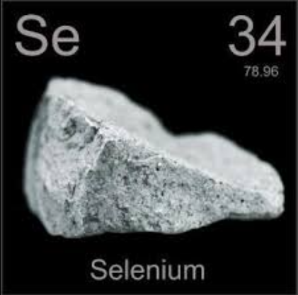
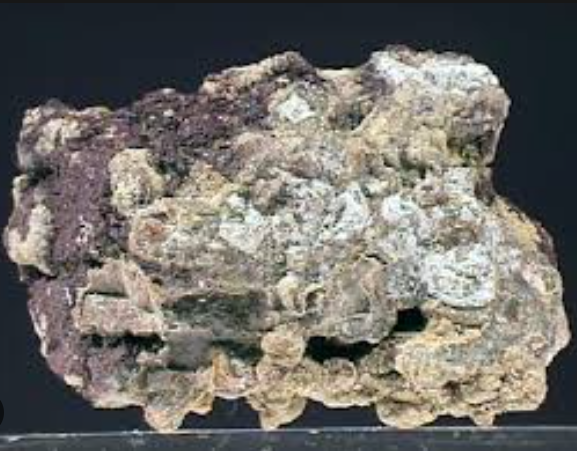

Неметал, існує в кількох модифікаціях, з яких найстійкішим є т. зв. металічний С., сірого кольору, напівпровідник, дуже чутливий до світла. Густина 4,807; tплав 221 °C, tкип 685,3 °C. Існує кубічна та моноклінна модифікації С. При 100—150 оС ці форми переходять у гексагональний С. З розчинів осаджується аморфний червоний С. Випаровування С. містять молекули Se2, Se4, Se6 та ін. У хім. відношенні С. майже повний аналог сірки. Сполуки Селену часто отруйні.
На повітрі стійкий. Взаємодіє з F2, Cl2, при нагріванні — з О2, Н2, металами. Не розчиняється в HCl, розбавленій Н2SO4. Розчиняється в концентрованій HNO3.
Середній вміст С. в земній корі 5х10−6 % (мас). Природні сполуки С. г.ч. є похідними селеноводню Н2Se, як правило, знаходяться в суміші з сульфідами мідно-цинкових колчеданних, мідно-кобальтових і поліметалічних руд. Селен — розсіяний елемент, промислові запаси якого пов'язані з сульфідними родовищами. У самостійному вигляді мінерали С. зустрічаються рідко. Всього відомо 40 мінералів: мінерали групи лінеїту (селеніди Co, Cu, Ni); гуанахуатит Bi2Se3, доунеїт SeO, фероселіт FeSe2 (68—72 %), клаусталіт PbSe (27—28 %), блокіт NiSe (68 %), науманіт Ag2Se (23—29 %) та ін.

За запасами селену найзначніші магматичні мідно-нікелеві, гідротермальні мідно-молібденові, мідно-колчеданні та інфільтраційні селен-уран-ванадієві родовища, з яких практично і добувається майже весь С. при вмісті в рудах 0,04-0,004 %.
Багаті родовища належать до кобальт-селенідо-телурової (Акджілга, Киргизстан; Верхньо-Сеймчанське, РФ), селенідної (Пакахака, Болівія; Сан-Андреасберґ, Німеччина; Сьєрра-де-Уманго, Аргентина), уран-селенідної (Шинколобве, Заїр; район оз. Атабаска, Канада) і золото-телурової (Нагіаг, Фатце-Байа, Румунія) формацій.
В організмі людини міститься 10-14 мг селену, більша його частина сконцентрована в печінці, нирках, селезінці, серці, яєчках у чоловіків. Селен присутній в ядрі клітини. Добова потреба людини в селені становить 70-100 мкг. Згідно з даними епідеміологічних досліджень більш ніж 80 % населення України має дефіцит селену.

Селен в організмі взаємодіє з вітамінами, ферментами і біологічними мембранами, бере участь у регуляції обміну речовин, в обміні жирів, білків і вуглеводів, а також в окисно-відновних процесах.
Селен є складовим компонентом більше 30 життєво важливих біологічно активних сполук організму. Селен входить в активний центр ферментів системи антиоксидантного-антирадикального захисту організму, метаболізму нуклеїнових кислот, ліпідів, гормонів (глутатіонпероксидази, йодотіронін-дейододінази, тіоредоксінредуктази, фосфоселенфосфатази, фосфолипид-гідропероксид-глутатіонпероксидази, специфічних протеїнів Р і W і ін).
Селен входить до складу білків м'язової тканини, білків міокарда. Також селен сприяє утворенню трийодтироніну (гормон щитоподібної залози).Селен є синергістом вітаміну Е і йоду. При дефіциті селену йод погано засвоюється організмом. Разом з тим сполуки С. часто отруйні. ГДК для парів Se — 0,1 мг/м3.
Селен краще проводить електричний струм при освітленні, а тому широко використовується в фотоелементах. До 1940 р. ХХ ст. застосування селену було обмежене. У повоєнні роки селен став широко застосовуватися в напівпровідниковій техніці, для виготовлення фотоелементів, у вимірювальній апаратурі, телебаченні, сигналізації, в металургії у складі легуючих домішок до різних сталей і сплавів кольорових металів, як барвник у склоробній промисловості тощо. У сучасних напівпровідникових технологіях застосовуються селеніди багатьох елементів: олова, свинцю, бісмуту, стибію, селеніди лантаноїдів.